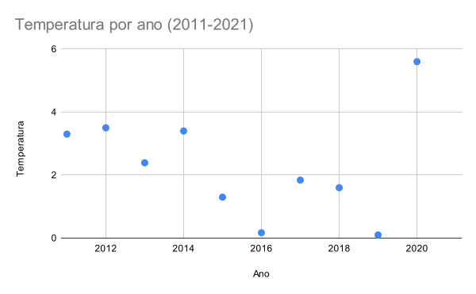
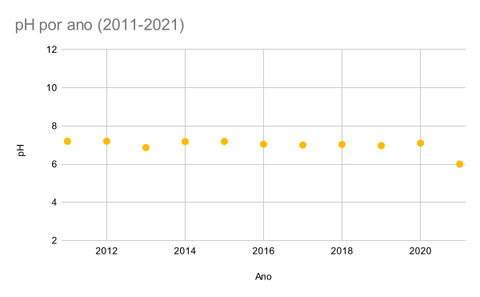
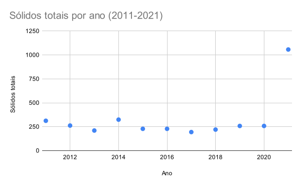
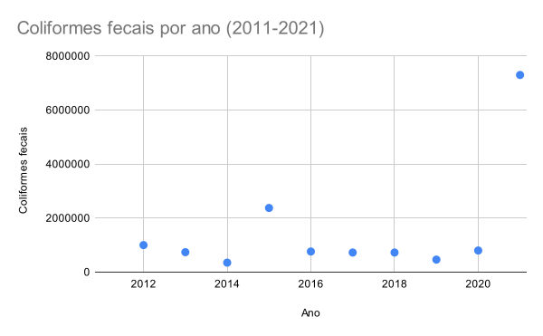
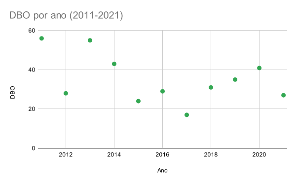
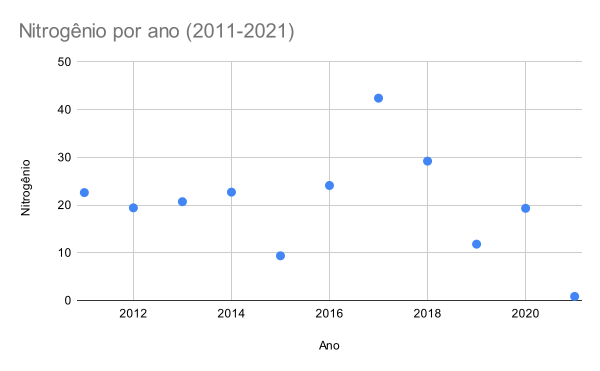
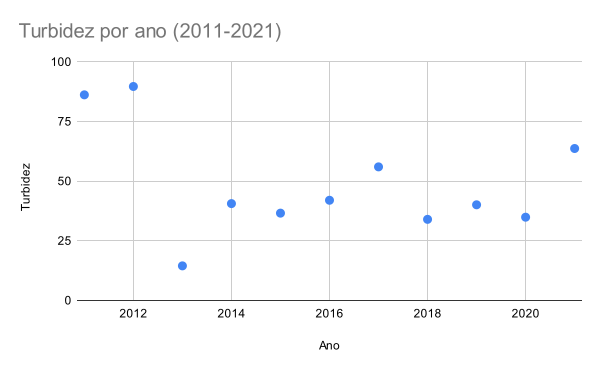
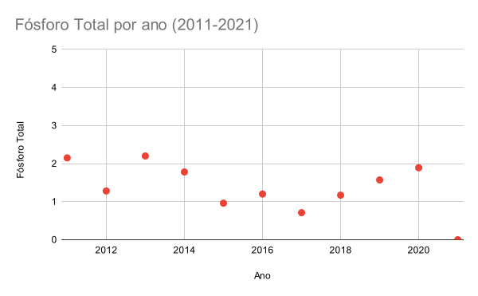
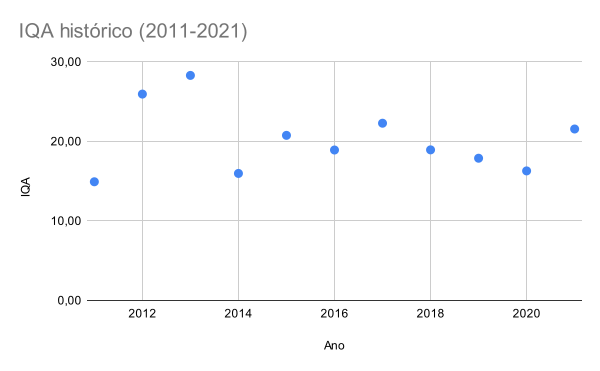

Química Tecnologica e Ambiental
Projeto 3 - Monitorando as águas
Introdução
De forma abstrata, podemos afirmar que o ser humano tem apenas duas casas de verdade: seu corpo e o planeta que habita. Independentemente do seu estilo de vida, essa afirmação é verdadeira para todos nós. E se ambas nossas casas possuem algo me comum é a relevância da água em suas composições.
Estima-se que 70% por cento do corpo humano seja formado por água, assim como 70% da Terra é encoberto pelo menos elemento. Isso por si só já deveria servir para demonstrar a importância dessa substância, mas ela ainda tem muitas outras funções. Por exemplo, um rio como o Pinheiros em uma metrópole como São Paulo poderia ser usado para transporte hidroviário, turístico ou não.
Mas a situação na qual se encontra hoje o segunda maior rio da maior cidade do país nos faz questionar se nós entendemos a real importância da água como recurso fundamental.
Rio em estudo
O rio pinheiros é um curso de água que está localizado na cidade de São Paulo, no estado de São Paulo, no Brasil.

No passado os rios Grande, Jurubatuba e Pinheiros formavam um único rio, com nascentes situadas na serra do Mar e com a foz no rio Tietê. A construção do barramento que deu origem à represa Billings, na década de 1920, criou uma ruptura em seu curso natural, que descaracterizou a noção de continuidade desses corpos hídricos.
Na cidade de São Paulo, é margeado pela via expressa Professor Simão Faiguenboim (Marginal Pinheiros), um dos principais eixos viários da cidade.
Características:
- Possui cerca de 25 quilômetros de extensão.
- Características principais e dados hidrográficos:
- A região hidrográfica que o rio pinheiros ocupa é a Região do rio Paraná.
- A bacia hidrográfica a qual o rio pertence é a Bacia Hidrográfica do rio Tietê.
- Sua sub-bacia é a Bacia Hidrográfica do rio Pinheiros.
- O rio nasce do encontro do rio Guarapiranga com o rio Grande.
- Deságua no rio Tietê. -O rio Pinheiros recebe os seguintes afluentes: ribeirão Jaguaré, rio Pirajuçara, córrego Poá, córrego Belini, córrego Corujas, córrego Verde, córrego Iguatemi, córrego Sapateiro, córrego Uberaba, córrego Traição, córrego Água Espraiada (Jabaquara), ribeirão Morro do S, córrego Ponte Baixa, córrego Zavuvus e Córrego Olaria. As nascentes destes córregos estão parte em São Paulo, parte no município de Taboão da Serra e parte no município de Embu das Artes.
Qualidade da água
A poluição do rio Pinheiros tem ligação muito próxima com a má gestão de recursos hídricos na cidade de São Paulo desde o século XX. No início do século passado o rio era próprio para banho e nado. Entretanto, por volta da década de 50, o rio passa a sofrer com os problemas sanitários da cidade, sofrendo com descarte de dejetos impróprios e esgoto clandestino. Desde então a situação do rio vem piorando à medida que a cidade cresce, ja que as obras de saneamento básico não chegam a muitos de seus habitantes. Com apenas cerca de 18% de seu esgoto tratado, São Paulo joga a grande maioria de seus dejetos no Pinheiros, agravando a situação do rio.
Entretanto, em 2020, o governo Dória anunciou uma série de medidas como parte da iniciativa Novo Rio Pinheiros, que tem como fim melhorar a qualidade da água do rio consideravelmente até 2022, diminuindo a quantidade de esgoto lançada nele.
Contexto social
Aos poucos, com a construção de pontes que permitiam a sua travessia, as margens do rio foram sendo ocupadas.
A partir de 1926, quando o rio ainda abrigava em suas margens clubes esportivos, com provas de travessia a nado e regatas náuticas, estações elevatórias geravam energia barata em abundância, capaz de promover a industrialização do Estado. A partir de 1928, foram iniciadas as obras de retificação do rio Pinheiros, que se estenderiam até os anos 1950. O objetivo destas obras era acabar com as inundações, canalizar as águas e direcioná-las para a Represa Billings, invertendo o sentido do rio, com a Usina Elevatória de Traição.
Em 1957, na margem leste do rio, foi inaugurado o ramal de Jurubatuba da Estrada de Ferro Sorocabana, que hoje é a Linha 9 da CPTM. Em 1970, nas duas margens do rio, foi inaugurada a Marginal Pinheiros, que isolou o rio Pinheiros do convívio com a população, antes mesmo de suas águas estarem poluídas. Com tantas transformações, as margens do rio perderam as matas ciliares e a vegetação natural foi se extinguindo. Na pequena faixa de terra restante foram implantadas linhas de transmissão de energia, interceptores, entre outros. O rio Pinheiros passou a receber esgoto doméstico e resíduos industriais, o que acabou por comprometer a qualidade de suas águas e a sobrevivência da fauna local.
A partir de 1998, seriam iniciados os trabalhos de recuperação do rio através de despoluição e recuperação das margens, que se estendem até hoje.
A poluição do rio afeta a vida diária das pessoas que moram e trabalham na região. A decomposição dos dejetos domésticos leva à formação de gás sulfídrico, principal responsável pelo mau odor do rio. O fedor pode ser sentido na Marginal Pinheiros, na Linha 9 da CPTM, na ciclovia na margem do rio e no Shopping Cidade Jardim.
Um risco à saúde decorrente da poluição é a grande presença de mosquitos transmissores de doenças em todo o curso do rio. Sugere-se que a proliferação de mosquitos é causada pela escassez de peixes, predadores naturais da larva do mosquito. Muitas outras espécies de animais também vivem ao longo do rio.
Teoria sobre o IQA
Dentre os parâmetros estudados obtivemos uma série de resultados qualitativos dos mais variados. Para os parâmetros nitrogênio, fósforo e temperatura os resultados foram muito bons, acima dos 90. Para pH, o resultado foi mediano, por volta de 50. Turbidez, resíduo total e oxigênio dissolvido retornaram resultados ruins, por volta dos 30. Já DBO e Coliformes tiveram resultados péssimos, abaixo de 10. Isso resultou num IQA abaixo de 21.56, o quarto melhor dos últimos 10 anos.
Laboratório e Metodologia
Obtenção da diferença de temperatura
A diferença de temperatura foi obtida no momento da coleta das amostras. Para cada amostra foi medida a temperatura (\(T_{amostra}\)) no local com um termômetro e também foi tirada a temperatura do ambiente (\(T_{amb}\)) e, assim, a diferença de temperatura é dada por:
\[\Delta T = T_{amostra} - T_{amb}\]
Para a nossa amostra (Rio Pinheiros), temos:
- \(T_{amostra}\): 23,5 °C
- \(T_{amb}\): 24 °C
Obtendo assim um \(\Delta T\) = -0,5 °C.
Obtenção do oxigênio dissolvido
Semelhante à temperatura da amostra, o oxigênio dissolvido é obtido no momento da coleta da amostra com um oxímetro e, em nosso caso, foi de 4,1 mg/L.

Obtenção do pH
O último dos parâmetros que obtivemos no momento da coleta foi o pH, usando um papel tornassol e obtivemos pH = 6,5.
Obtenção dos sólidos totais
A ideia por trás da obtenção dos sólidos totais é pesar a quantidade de sólidos presentes em um volume da amostra e considerarmos essa a concentração real da amostra. Para isso, aquecemos, inicialmente, um béquer de 250 mL por 10 minutos em uma estufa, a fim de eliminarmos qualquer substância volátil na superfície deste. Pesamos o béquer vazio em uma balança analítica e anotamos sua massa (\(m_{bequer}\)). Após esfriado o béquer a uma temperatura ambiente, adicionamos 100 mL da amostra ao béquer e levamos a uma chapa de aquecimento, até que a água da amostra e outras substâncias voláteis evaporem completamente. Pesamos novamente o béquer que agora contêm apenas os sólidos totais que não evaporaram (\(m_{bequer+solidos}\)). A diferença entre as duas medidas então será a massa dos sólidos totais, em gramas.
Como estamos interessados na concentração de sólidos totais em mg/L, devemos dividir pelo volume da amostra inicialmente colocado no béquer (100 mL).
Em nosso experimento obtivemos:
- \(m_{solidos}\): 0,1057 g = 105,7 mg
- \(Vol\): 100 mL = 0,1 L
Daí, portanto:
\[ST = \frac{m_{solidos}}{Vol} = \frac{105.7}{0.1} = 1057 \frac{mg}{L}\]
Obtenção dos coliformes fecais
Molhamos um papel de colipaper com nossa amostra diluída em 1000 vezes e deixamos este descansando por uma semana. Durante esse tempo, as bactérias presentes na amostra digeriram o açúcar no papel e formaram assim colônias em três cores: azul, vermelho e roxa. Sendo as bactérias que formam os coliformes fecais aquelas presentes nas colônias azuis e roxas.
Dessa forma, contamos o número de colônias desses grupos. É conhecido na academia que a concentração de Escherichia coli é aproximadamente 80 vezes o número de colônias e que estas representam 80% das bactérias que compõe os coliformes fecais, dessa forma, o número de coliformes fecais é de \(80\cdot 1.25 \cdot \textrm{(Nº de colonias)}\), multiplicando ainda pelo fator de 1000 no final decorrente da diluição. Em nosso caso, foram contadas 73 colônias em nosso colipaper, e, portanto, o número de coliformes fecais é de \(7.3 \cdot 10^6\) .
Obtenção do DBO
Após cinco dias descansando, diluímos a amostra original em quatro novas amostras com fator de diluição de 2, 4, 8 e 16 vezes, utilizando água saturada de oxigênio sob a presença de nutrientes (NPK).
A ideia é medir a quantidade de oxigênio diluído em cada amostra. O DBO pode ser obtido at
Onde:
- \(OD_{inicial}\): oxigênio dissolvido na amostra no início da medição
- \(OD_{final}\): oxigênio dissolvido na amostra no fim da medição
Obtendo, portanto, quatro possíveis valores para o DBO.
A chave para obter uma boa medida do DBO é escolher, dentre as quatro amostras, qual representa o valor real de DBO. Para isso, devemos escolher a última amostra antes de os níveis de oxigênio final e inicial dissolvidos sejam próximos, pois, nesse caso, significaria que a quantidade de oxigênio dissolvido é maior que a demandada pelo sistema. Em nosso caso, é a amostra com fator de diluição de 8 vezes, temos:
- \(OD_{inicial}\): 5,1 mg/L
- \(OD_{final}\): 1,6 mg/L
E daí uma DBO = 27 mg/L.
Obtenção da concentração de nitrogênio
O nitrogênio presente na amostra está principalmente na forma de amônia (\(NH_3\)), amoniacal e nitrogênio orgânico. Para determinar a concentração do elemento, estas substâncias serão convertidas em sulfato de amônio, por meio da digestão com ácido sulfúrico, sulfato de potássio e sulfato de mercúrio, pelo método de Nitrogênio Total de Kjeldahl. Em seguida, o sulfato é tratado com tiossulfato de sódio em meio alcalino e a amônia restante é destilada e recolhida em ácido bórico, tendo, assim, sua concentração determinada por titulação.
A amostra foi conservada em ambiente ácido pela adição de ácido sulfúrico e refrigerado a 4 °C, dando assim uma validade de 7 dias a partir da coleta.
Mais detalhadamente os passos são:
- colocar 100 mL da amostra em um Erlenmeyer de 250 mL juntamente com um bastão magnético para agitação;
- adicionar 3 mL de ácido sulfúrico concentrado, 2 g de sulfato de magnésio e 3 mL de sulfato de mercúrio (80 g/L);
- misturar a solução e colocar o Erlenmeyer no sistema de aquecimento com recolhimento de gás. Acionar a agitação e aquecer, aumentando a temperatura gradativamente;
- adicionar, após esfriar, aproximadamente 100 mL de água destilada;
- adicionar 3 gotas de fenolftaleína e agitar o Erlenmeyer;
- adicionar aproximadamente 10 mL do reagente hidróxido-tiossulfato (solução 500 g/L de NaOH e 250 g/L de \(\textrm{Na}_2\textrm{S}_2\textrm{O}_3 \cdot 5\textrm{H}_2O\)) ou até que a solução fique rósea;
- colocar novamente o Erlenmeyer no sistema de aquecimento com recolhimento de gás, fazer a destilação recebendo, portanto, o destilado num outro Erlenmeyer de 250 mL, contendo 50 mL de solução de ácido bórico (20 g/L);
- transferir o líquido recolhido para um balão volumétrico de 250 mL e completar com água deionizada;
- Titular com ácido sulfúrico 0,001 M até atingir o pH de uma solução de ácido bórico padrão previamente preparada.
As equações químicas que ocorrem durante o experimento são:
- Etapa 2 e 3: Norgânico → NH4+ (na presenção de HgSO4)
- Etapa 6: NH4+ + OH- → NH3 + H2O
- Etapa 7 e 8: NH3 + H3BO3 → NH4+ + H2BO3-
- Etapa 10: H2BO3- + H+ → H3BO3
Foram utilizados, em nosso experimento, 0.6 mL de ácido para inicialmente 50 mL de amostra. E, por estequiometria das reações isso significa a uma concentração inicial de nitrogênio igual a 0,84 mg/L.
Obtenção da turbidez
Para obtermos a turbidez utilizamos um espectrofotômetro. O conceito do aparelho é simples: ele lança, sobre a amostra, luz branca com todos os espectros de cores, a luz antes de alcançar é filtrada por um monocromador que filtra um comprimento de onda (600 nm em nosso caso) desejado e, após atravessar a amostra um detector indica quanto foi emitido e refletido, permitindo assim saber quanto foi absorvido.
A partir desse valor da absorbância, podemos utilizar uma regressão criada previamente para o comprimento de onda utilizado que relaciona absorbância com a turbidez e, através da equação da reta, obtemos a turbidez.
Para nossa amostra a turbidez obtida foi de 63,703 UNT.
Obtenção da concentração de fósforo
Para medir a concentração de fósforo também usamos o espectrofotômetro, mas nesse caso o comprimento utilizado foi de 870 nm. Novamente, a partir de uma regressão feita entre a concentração de fósforo e absorbância, podemos obter, da equação da reta a concentração de fósforo. Em nosso experimento, a concentração de fósforo foi tal que não pôde ser medida pelo espectrofotômetro utilizando a regressão, assim, a concentração de fósforo é dita por ser 0 mg/L.
Obtenção do IQA
Obtidos os valores dos parâmetros do índice, obtemos o nível de qualidade pelos gráficos de qualidade versus índice do IQA e, assim, calculamos o IQA.
Contexto de saneamento
Por incrível que possa parecer, São Paulo ranqueia como oitavo município com melhor saneamento básico, de acordo com estudo do Trata Brasil. Entretanto, a cidade ainda cresce em um ritmo alucinante, acima do que a estrutura sanitária da cidade pode prover. A região onde a coleta foi realizada possui abundante estrutura sanitária, porém o rio Pinheiros recebe esgoto coletado das mais diversas regiões da cidade, e de acordo com o documentário “A Água de Dentro”, apenas 18% de todo o esgoto da cidade é tratado. Segundo a resolução da CONAMA 357 de 2005, alguns padrões para águas doces devem ser seguidos para que o corpo dágua se encontre em estado aceitável de preservação e manutenção. Usando os dados obtidos, faremos uma comparação entre o atual Rio Pinheiros e os padrões de conservação
A diferença de temperatura em valores absolutos se encontra em um padrão aceitável segundo a CONAMA, sendo obtido de 0.5°C e o limite de 3°C.
O oxigênio dissolvido nas amostras (OD) não deveria ser inferior a 6 mg/L, contudo, o valor obtido de 4,1 mg/L mostra a baixa de oxigênio na água do Rio Pinheiros, acentuando ainda mais sua poluição.
O ph das amostras se mostra um pouco mais ácido que o padrão de 7, contudo, está dentro dos padrões aceitáveis pela CONAMA, estando dentro da faixa de 6 a 9.
Os sólidos totais nas amostras se mostram extremamente fora do padrão estabelecido sendo esse, segundo a própria CONAMA, "resíduos sólidos objetáveis: virtualmente ausentes". Com isso, vemos uma clara presença de contaminantes anormais nas águas ali presentes.
O número para os coliformes fecais totais de \(7.3 \cdot 10^6\) estão extremamente fora da curva, que, segundo a CONAMA, não deveriam ultrapassar 43 por 100 mililitros que equivale a um percentil de 90% da amostra.
A alta presença de matéria orgânica nas amostras, elevou a Demanda Bioquímica de Oxigênio para 27 mg/L, nove vezes a mais do que o considerado bom de 3 mg/L no máximo.
O nitrogênio total da amostra está fora de padrão para o ph apresentado, os valores deveriam ser próximos de 3,7 mg/L para a faixa de ph de trabalho.
A turbidez das amostras não ultrapassam os limites estabelecidos de até 100 UNT, estando a 63,7 UNT.
A concentração de fósforo é de 0 mg/L, que está nos padrões de até 0.05 mg/L para ambientes de moradia extensiva.